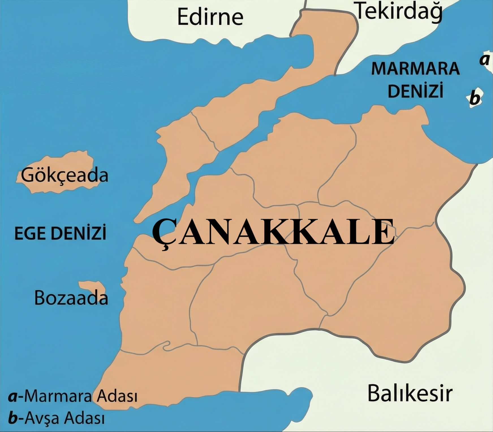
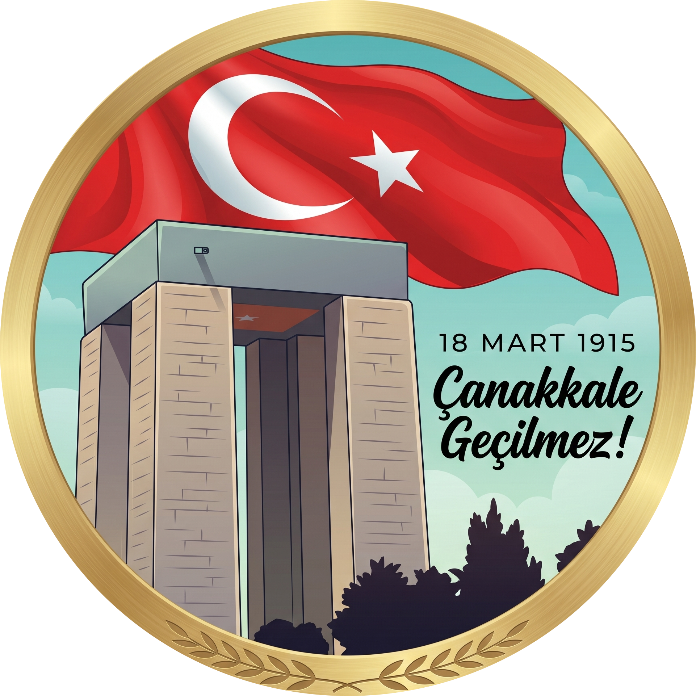
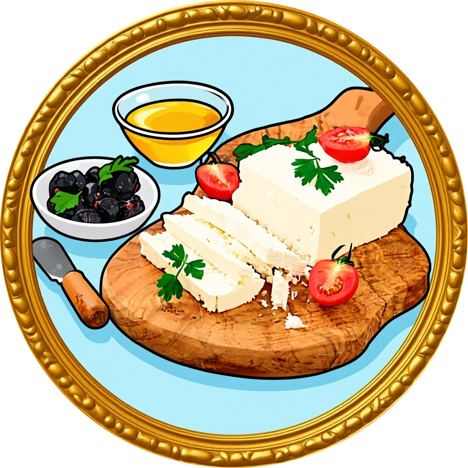
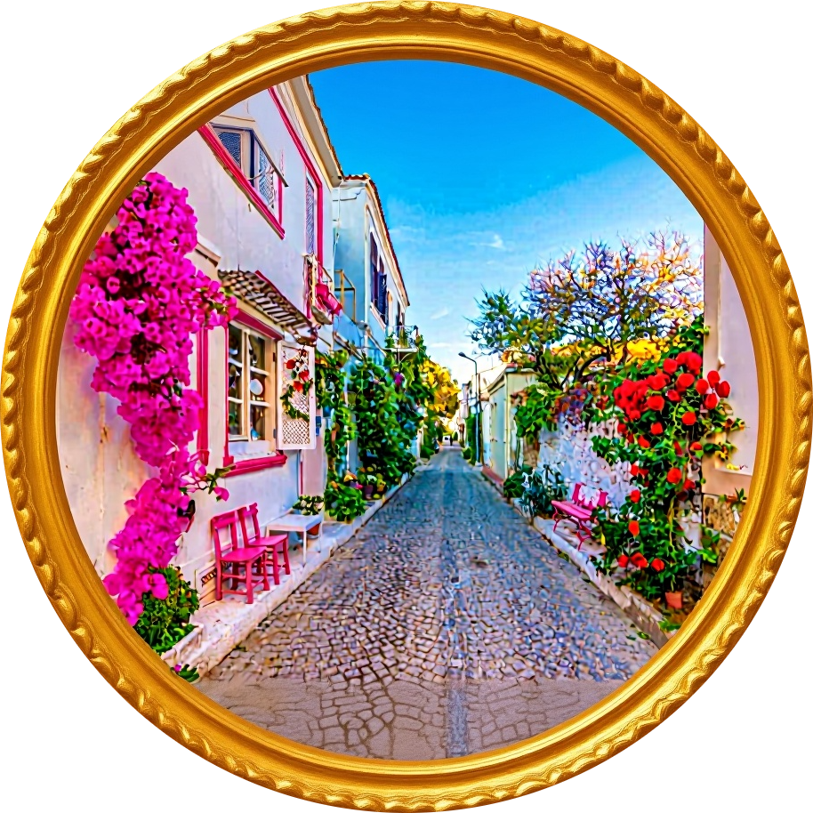
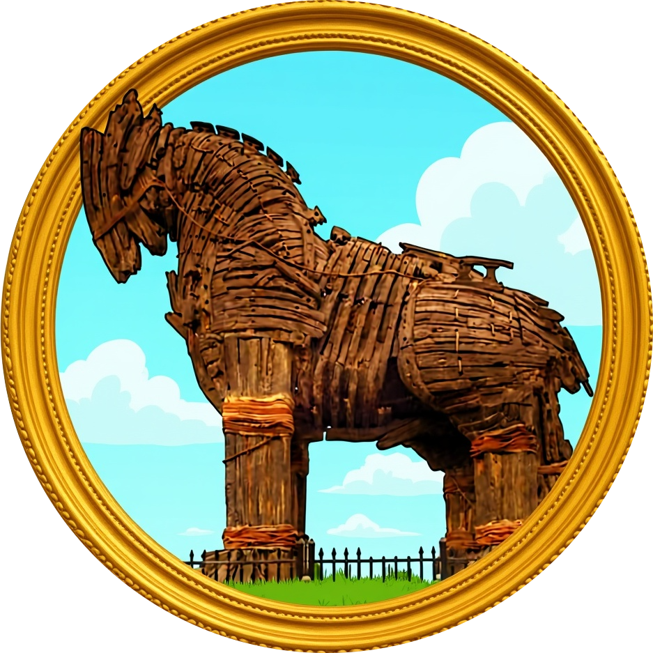
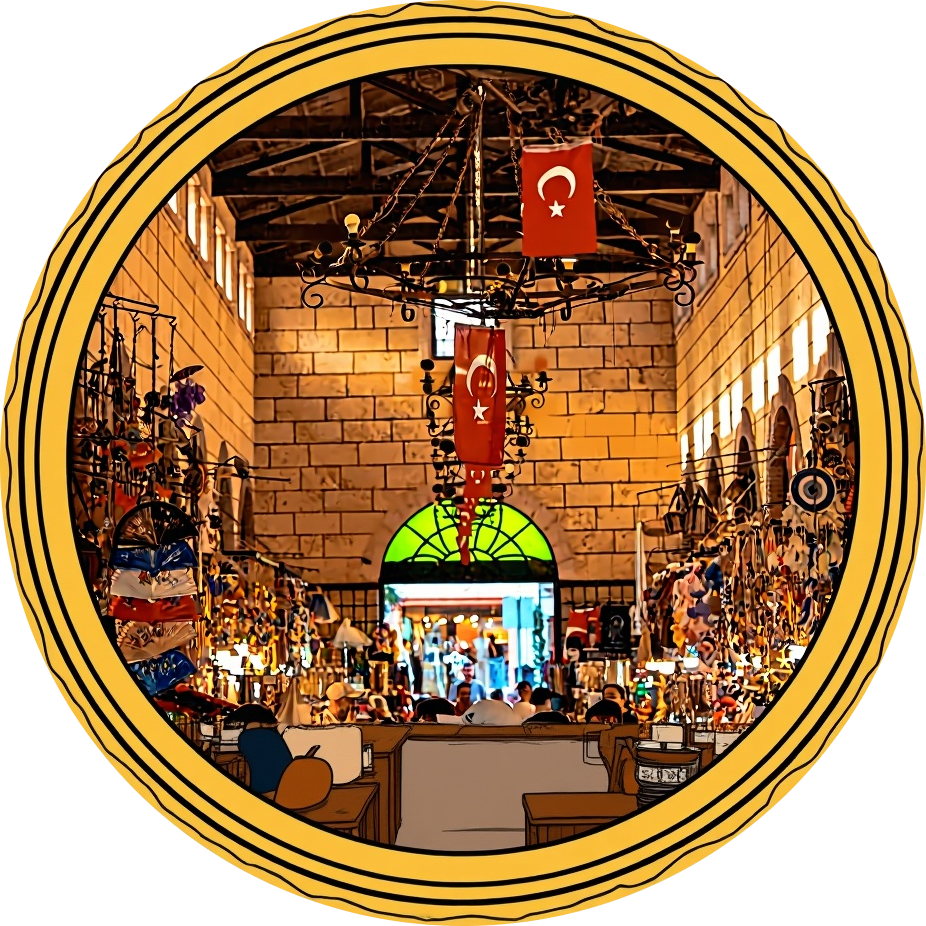
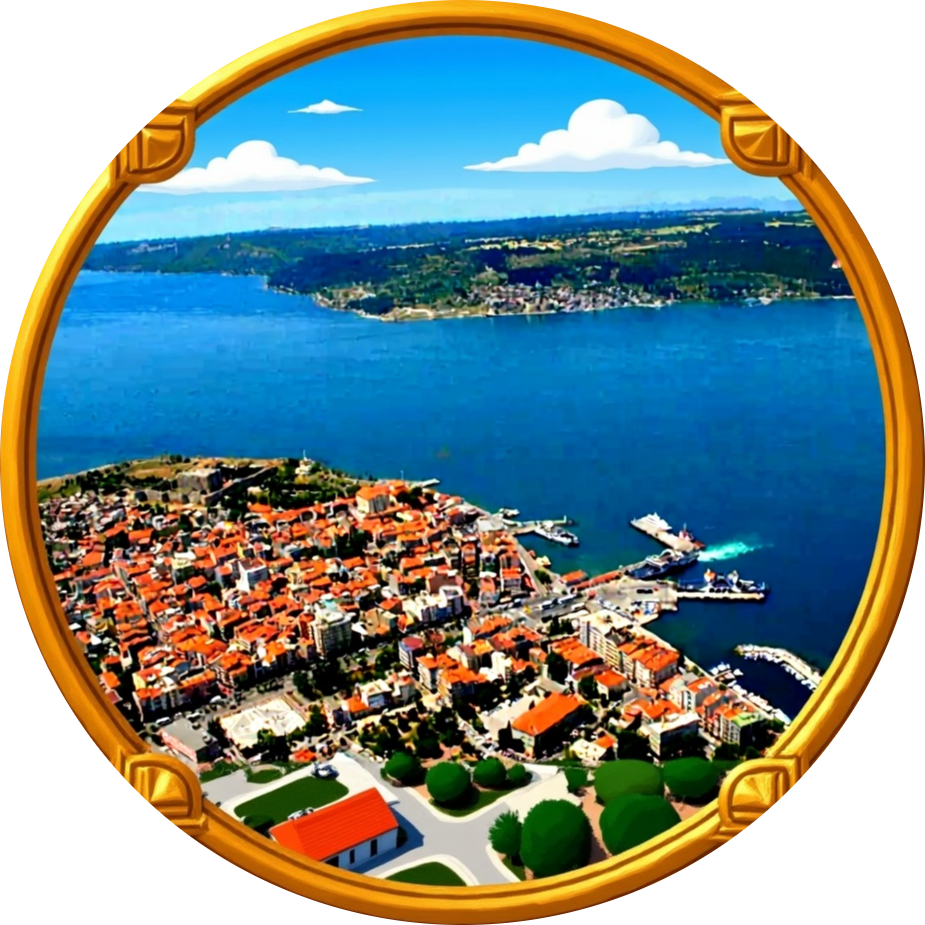

Çanakkale'nin Kültürel Zenginlikleri
Ana Sayfa
Haritadaki ikonlara tıklayarak Çanakkale'nin destansı tarihini ve kültürel hazinelerini keşfedebilirsiniz. 🌊

Çanakkale Zaferi

Yöresel Lezzetler

Adalar ve Gelibolu

Truva Antik Kenti

Aynalı Çarşı

Çanakkale Boğazı
